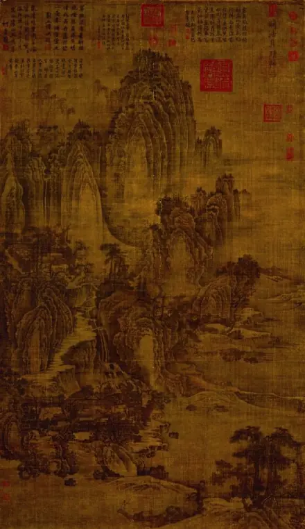

艺术特征
水墨画是中国汉族特色较强的一种绘画艺术形式，借助具有本民族特色的绘画工具和材料（毛笔、宣纸和墨），表现具有意象和意境的绘画。其特征主要有两个方面，一是从工具材料上来说，水墨画具有水乳交融，酣畅淋漓的艺术效果。具体地说就是将水、墨和宣纸的属性特征很好地体现出来，如水墨相调，出现干湿浓淡的层次；再有水墨和宣纸相融，产生溵湿渗透的特殊效果。二是水墨画表现特征，由于水墨和宣纸的交融渗透，善于表现似像非像的物象特征，即意象。这种意象效果能使人产生丰富的遐想，符合“中国绘画注重意境”的审美理想。
作画方式
中国由古至 今，发明了多种绘画方法，最常见的是用画笔作画。以后更出现用口咬笔，脚趾握笔，双脚夹笔，腋夹笔，身体着墨(包括手指、脚趾、头发、手肘等部位),当代中国水墨画家在创作水墨画时,材料运用是广泛的,在非宣纸上创作水墨画成了潮流,如在衣服上,在人的身体上,题材上更是多样化,不仅限于山水花鸟,除抽象水墨外更扩展到行为艺术范畴。

水墨画： 五代 荆浩 《匡庐图》
古代绘画六法
绘画六法由5世纪的画家及艺术理论家谢赫所著，并记录在其著作《古画品录》的序论中。当中提及的六法为：
- 气韵生动是也，一种说法指其意为传神，此外亦有指表达画家人品或使用画笔及墨水的技术要精的说法。
- 骨法用笔是也，即用画笔的技巧在表现钩线点戳时要有"骨力"，这和当时书法和绘画密不可分的关系有关。
- 应物象形是也，即感受物体的结构再描画出物体的形态。
- 随类赋彩是也，即因应物体的本身色彩而在作品中加上适当的色调及表现出层次感。
- 经营位置是也，即对作品构图、深度的思考。
- 传移模写是也，即对自己的草稿作增加删除后再画一次才能完成作品，此外亦有对古人作品作出模仿摹制作为学习的意思。
传统绘画特点
水墨画有着自己明显的特征。传统的水墨画，依南朝谢赫的古画品录评论：
- 讲究“气韵生动”，不拘泥于物体外表的肖似，而多强调抒发作者的主观情趣。中国画讲求“以形写神”，追求一种“妙在似与不似之间”的感觉
- 讲究笔墨神韵，笔法要求：平、圆、留、重、变。墨法要求墨分五色，浓、淡、破、泼、渍、焦、宿。
- 讲究“骨法用笔”，不讲究焦点透视，不强调环境对于物体的光色变化的影响
- 讲究空白的布置和物体的“气势”。
可以说西洋画是“再现”的艺术，中国画是“表现”的艺术。中国画并不只是宣纸上的点染勾勒，国画是要表现“气韵”、“境界”，实际上是一个系统的思想集成最终的表现。意、识、灵齐备，诗、书、画一体，诗为画之意，书为画之骨。技法之熟，可呈胸臆；画面之外，可留思想，这也是判断中国传统书画作品艺术价值高下的实质所在。